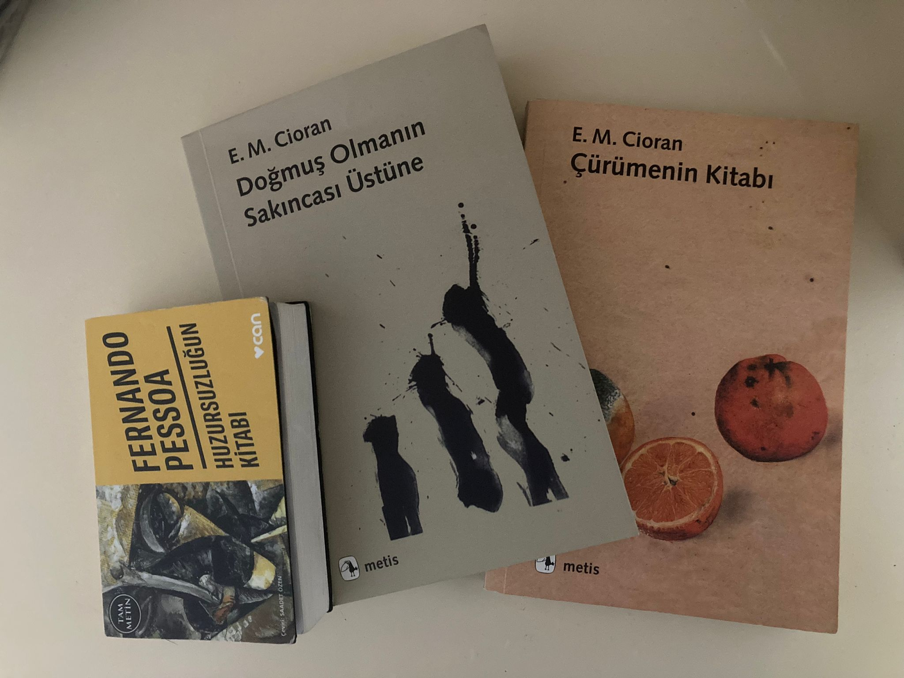

FELSEFE OKUMAK İSTEYENLERE BAŞUCU KİTAPLARI

-
Huzursuzluğun Kitabı
-
Doğmuş Olmanın Sakıncası Üstüne
-
Çürümenin Kitabı
"Felsefe merakla başlar" der ünlü filozof Platon.
Düşünce bilimi veya düşünbilim olarak tanımlanan felsefede ilk olarak filozofluk kavramına açıklık getirelim
.Filozof ifadesi “phileo” ve “sophia” kelimelerinin birleşiminden oluşur. Yunanca olan bu kelimelerden phileo;
peşinden koşmak, aramak anlamlarına gelirken sophia; bilgelik ifadesini karşılar. Dolayısıyla philosophia da
bilgiyi seven, bilgiyi arayan, peşinden koşan, bilgelik arayışında olan kişi demektir. Felsefe adı verilen bilim
dalında; varlık, yokluk, sevgi, gerçek, adalet, insan, sanat, din, bilim, güzellik ve ahlak gibi daha birçok konu
ele alınabilir. Filozoflar bu konular hakkında yüzyıllardır fikir sunmuş, doğruyu bulmaya çalışmışlardır.
Felsefenin temelinde soru sorma eylemi yatar. Zaten felsefenin amacı da budur. İnsanların, içinde yaşadıkları dünyayı
,inandıkları dini, yönetildikleri devletleri sorgulamaları istenir. Merak eden ve sorgulayan her insanın ruhunda
bir miktar da olsa felsefeye eğilim var diyebiliriz. Gelelim asıl konumuza. Bu yazımızda felsefeyi konu alan kitaplarını
derledik. Hayata karşı bakış açınızı değiştirecek en etkili ve en çok okunan 3 felsefe kitabını gelin hep birlikte
inceleyelim.Emil Cioran, tüm eserlerinde mutsuzluğu anlatmaktadır. Bunu anlatırken hayatın ince ve hassas noktalarına
değinmektedir. Mutsuzluk, Emil Cioran’ın çocukluğundan beri peşini bırakmadığı bir sancı olmuştur.Neden mi?
Çünkü o bu hayatta en çok mutsuzluğuna sarılmıştır.
Bugünkü portekiz edebiyatının en önemli eserlerinden biri olarak görülen Huzursuzluğun Kitabı
'ndaki her metin
,kırık bir aynanın,gerçekliğin bir yanını yansıtan ve onu sonsuzca çoğaltan bir parçası..
Yazar E.M.Cioran'ın diğer kitaplarını da incelemek için buraya tıklayınız.
Yazar Fernando Pessoa'nın diğer kitaplarını da incelemek için buraya tıklayınız